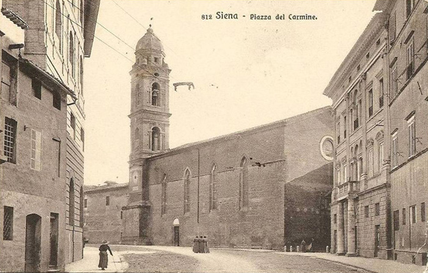

|
- L'OROLOGIO DELLA CHIESA DEL CARMINE -
|
|
 clicca sull'immagine per vedere anche altre cartoline della Chiesa
Al Ill.mo Sig.re Gonfaloniere della Città di Siena I possidenti delle Contrade Tartuca Chiocciola e Pantera, pregano Vostra Ill.ma a voler risovere di voler fare battere quell'orologio posto nel Convento dei Carmelitani Scalzi, che più volte son venuti a presentarsi senza averne nessuni obblighi, perchè quest'orologio fu fatto nel 1800 da Giovanni Lorenzo Barbetti e i medesimi supplicanti contribuirono che fosse fatta una questua e fù fatta, fecero la somma di scudi cento, se la comunità si opponesse di non volere pensare a ristaurarlo fa un sbaglio. Primo perchè costa quaranta lire perchè lo regola. Secondo nel 1812 che ci cadde il fulmine, nel dì 24 Giugno, alle ore 4 pomeridiane il Governatore Giulio Bianchi non solamente pensò accomodare il detto orologio, e poi fece ristaurare il campanile. Io come possidente che pago annualmente la mia tassa mi ero provato di andare attorno a questi possidenti, delle medesime contrade per fare una questua per risistemare il suddetto orologio e mi (h)anno detto che pagano le tasse come tutti gli altri e che non possono contribuire. In ultimo gli avverto che nell'1829 dalla medesima comunità Giovanni Milianti ricevette lire 30 passate per mano del Sig. Gonfaloniere Giovanni Piccolomi(ni) per ristauri fatti al suddetto orologio e questi li furono dati dai Religiosi dei Carmelitani Scalzi e che qualche volta possino cessare queste imprecazioni e mormorazioni che si sentono giornalemente contro i Religiosi e contro il Governo stesso. 17 gennaio 1832 |